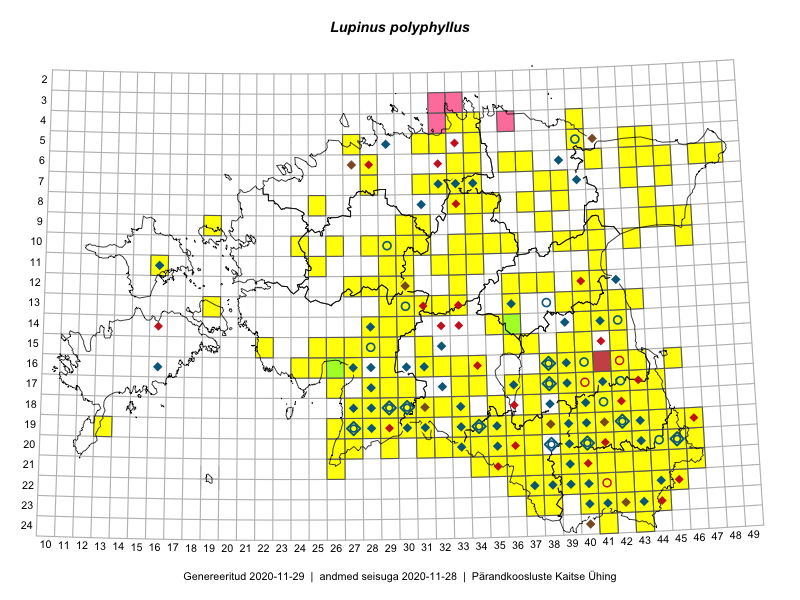

Lupinus polyphyllus
Uuendatud: 2016-12-01
Kaardile koondatud taksonid: Lupinus polyphyllus Lindl.

Kaart põhineb 632 kirjel.
Kuvatud viited 20 esimesele andmebaasikirjele, ülejäänud PlutoFis
- Thea Kull: 2015-04-27: 07-45: GPS punkt
- Malle Leht: 2015-05-22: : ala
- Tiit Hallikma, Toomas Kukk, Indrek Tammekänd: 2015-06-09: 12-28: ala
- Malle Leht: 2015-07-09: : ala
- Peedu Saar, Meeli Mesipuu: 2015-05-05: 16-38: GPS punkt
- Peedu Saar: 2015-05-09: 13-30: ala
- Peedu Saar, Timo Luhamäe: 2015-05-09: 12-29: ala
- Peedu Saar, Timo Luhamäe: 2015-05-09: 12-29: GPS punkt
- Peedu Saar, Timo Luhamäe: 2015-05-10: 12-30: ala
- Peedu Saar, Timo Luhamäe: 2015-05-10: 12-30: GPS punkt
- Peedu Saar, Timo Luhamäe: 2015-05-11: 12-37: ala
- Peedu Saar, Timo Luhamäe: 2015-05-11: 12-37: GPS punkt
- Peedu Saar, Timo Luhamäe: 2015-05-13: 07-39: ala
- Peedu Saar, Liina Oja: 2015-05-22: 19-29: ala
- Peedu Saar, Liina Oja: 2015-05-22: 19-29: GPS punkt
- Thea Kull: 2015-07-07: 16-40: ala
- Peedu Saar, Liina Oja: 2015-05-20: 18-28: ala
- Peedu Saar, Liina Oja: 2015-05-20: 18-28: GPS punkt
- Peedu Saar: 2015-05-01: 15-42: ala
- Peedu Saar: 2015-05-01: 15-42: GPS punkt